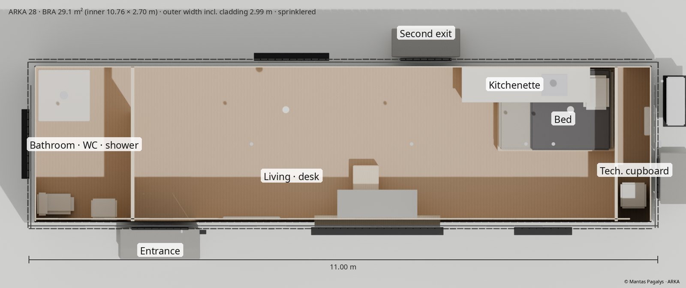

ARKA · From temporary to permanent · October 2026
A permanent home costs a municipality less per month than one night in a hotel
Norwegian municipalities are paying hotel and guesthouse rates to house people they are legally obliged to help. A small factory-built home on a municipal plot, financed by Husbanken and let at a rent within the housing-benefit limit, costs the municipality at most about 1,300 kr a month after rent, even with every cautious assumption applied.
Why ARKA: arka means arch, the structure that spans a gap and carries the load. ARKA spans the gap between temporary housing and a permanent home, built from parts that already exist.
How to read the figures: sourced from a named public source · calc arithmetic on sourced figures · assumption an input the pilot will confirm. Every figure is reproducible with the published model (arka_finance.py); the last slide lists sources and how far each has been checked.
© 2026 Mantas Pagalys, originator of the ARKA model (first version dated 28.09.2026). Municipalities and other public bodies may use this method for their own procurement, with attribution. Commercial reuse, resale or reproduction by suppliers, consultants or investors requires written permission. Contact: pagalysm@gmail.com
The problem
The temporary solution has become the expensive one
At the end of 2025, 9,396 municipal homes stood unlet while 14,458 applications for municipal housing were refused (SSB tables 12008 and 12012). The shortage is not homes as such but the right home in the right place. Tromsø has said publicly that long stays in temporary housing put it in breach of the law. The money is already being spent; the question is what it buys.
The comparison
Kroner per month, per household. On the left, what Tromsø paid on average for temporary housing in 2025. On the right, the most a permanent ARKA home costs the municipality after rent: an ordinary plot, no VAT refund, no donor contribution. calc
Net monthly cost to the municipality, per household housed
Home: Husbanken loan at 4.774 % (20-year fixed, October 2026) over 50 years, running costs 1,640 kr/month (maintenance, municipal fees, insurance), rent 7,050 kr at 95 % occupancy, no VAT refund. Temporary housing: Stavanger's upper nightly rate × 365 / 12; Tromsø's 2025 net spend ÷ about 70 households.
The price
Buy the home, not the contractor
Same scope in every bar: one small permanent home, groundwork and connections included. The saving comes from how the home is bought, not from building less.
Capital cost per home, million kroner excl. VAT
Hard-use tender: Ringsaker 2024, one hardbruksbolig, complete delivery incl. site preparation, water and power. Totalentreprise: estimates stated by municipalities in their tender notices, 55–85,000 kr/m² × 30 m². ARKA route: module ≈28,000 kr/m² × 30 m², groundwork 275k on an ordinary plot or 100k on a serviced plot, plus 40k soft costs.
How it works
Five parts that already exist. The model only connects them.
For a municipality that prefers not to borrow: a foundation or investor owns the homes on an 85 % Husbanken loan, under a tilvisningsavtale that gives the municipality the right to place tenants. That route needs more than 15 % equity to be bankable. See "One house, three money engines".
The reference unit
ARKA 28: drawn to the rules that make it fast and fundable




| Requirement | Rule | ARKA 28, measured on the model |
|---|---|---|
| Simpler permit route, SAK10 § 3-1 e (no responsible enterprise only on an already-built plot) | ≤30 m² BRA, one storey, ≤4.5 m high, no flue | 29.1 m² · 1 storey · 3.44 m · no flue |
| Room height, TEK17 § 12-7 | ≥2.4 m in rooms for permanent use | 2.66 m clear |
| Transport without escort | ≤3.0 m wide | 2.99 m |
| Housing benefit (bostøtte) | Own entrance, bathroom and WC, cooking, space to sleep and sit | All present |
| Heating | No flue under the simpler route | Air-to-air heat pump and panel heaters |
| Safety, from six municipal tender specifications | Sprinkler with alarm, second exit, staff access to technical installations | Home sprinkler and smoke detectors, rear door, technical cupboard opened from outside with a key safe |
| Hard use | Surfaces that can be cleaned and replaced | Floor falling to drains, no shower glass, plywood screwed on visibly over OSB |
Design illustrations of the ARKA 28 reference unit, rendered from the author's parametric model, with every dimension above checked by script against the rule beside it. They are not photographs of a built house. Final dimensions follow the chosen supplier's documentation and the municipality's requirements. A home larger than 30 m² is a separate product that requires a responsible enterprise and independent control.
The municipal budget
The real test is net cost, and every case stays far below temporary housing
Net monthly cost to the municipality after rent, with no VAT refund
Loan at 4.774 % over 50 years with monthly terms; running costs 1,640 kr/month; rent 7,050 kr at 95 % occupancy; 40k soft costs per home. A serviced plot with a 200k donor contribution runs a surplus of about 535 kr a month.
In the six largest housing markets the case is stronger. Housing benefit allows a higher rent ceiling in Oslo (+27,982 kr a year) and in Bergen, Trondheim, Tromsø, Stavanger and Bærum (+19,079 kr), so rent can be 8,640–9,382 kr a month. There a home on a serviced plot covers its own loan 1.22–1.35 times, with no donor contribution and no VAT refund (Forskrift om bustøtte § 3).
Rent alone does not cover the loan in every case, and the model does not pretend it does. With the VAT refund, which is possible only for specially adapted homes, every case improves by about 1,100–1,300 kr a month. Over 20 years, the home pays off for any municipality whose temporary housing costs more than about 9,600–11,000 kr per household per month (317–363 kr a night). Tromsø's 2025 average was about 16,200.
Where philanthropy fits
The same 10 M kr: 8 homes bought, or 37 homes made cash-positive
Husbanken and rent pay for the house. Donor money does what neither will: a contribution of about 270,000 kr per home lifts a serviced-plot home from a small deficit to a surplus with lender-grade cover (1.2×), even with no VAT refund.
Homes delivered per 10 M kr of donor money
Same basis for both bars: serviced plot, no VAT refund. Bought outright: 1.225 M kr per home incl. VAT, so 8 whole homes. Catalyst: 270k per home on a municipal Husbanken loan.
Who it serves
One house, three money engines
The home is the same for everyone. What changes is who owns it and how it is paid for. The order below starts where the numbers are strongest and the buyer is clearest.
| Engine | Who lives there | Who owns and how it is paid for | When |
|---|---|---|---|
| 1 · Municipal home | People the municipality houses: low-income single adults, refugees, people with disabilities, young adults leaving care, people in recovery | The municipality, on a Husbanken loan of up to 100 %, rent within the housing-benefit limit | Pilot |
| 2 · Mixed rental | At least 40 % placed by the municipality; the rest rented on the open market to students, single workers and people who choose to live small | A foundation or investor on an 85 % Husbanken loan, with a tilvisningsavtale for at least 20 years. Needs more than 15 % equity | Next |
| 3 · ARKA 40+ | Young first-time buyers in rural municipalities | The municipality buys and sells on; a local bank lends (the Heim model). Over 30 m², so a separate product with full permit roles | After first deliveries |
Mixed tenancies strengthen the model: a home in an ordinary street, among ordinary neighbours, is the setting Housing First aims for.
Why no one blocks it
Every party with a veto comes out ahead
| Party | Today | With ARKA | Outcome |
|---|---|---|---|
| Municipality | Temporary-housing bills and a legal duty it struggles to meet | A permanent home at a fraction of the monthly cost | Better off |
| Husbanken | 93 % of 2025 rental-loan volume went to private companies | Lends to the safest borrower, on its core mandate | Better off |
| Home suppliers | 3–5 tenders a year that buy the home on its own | More of those tenders, spread by an open method | Better off |
| Procurement officer | Personal blame if a new method fails | A template, a state example to point to (DFØ Eksempelbanken), and a coordinator | Better off |
| Donor | 1 home per ≈1.2 M kr | 1 home made cash-positive per ≈270k kr | Better off |
| Hotels, totalentreprise contractors | Paid | Lose some business | Worse off · no veto |
Objections
What a credit committee will ask, answered
| Objection | Answer | Remaining risk |
|---|---|---|
| Rent does not cover the loan in every case | Correct, and the model says so. The municipality's worst-case net cost is about 1,300 kr a month per home, against about 16,200 for temporary housing in Tromsø. A donor contribution of about 270k makes a serviced-plot home cash-positive. | Low |
| No VAT refund | Already assumed. Refunds go only to specially adapted homes (Skattedirektoratet 2013); the courts are split and both rulings are under appeal. A refund would improve every case by about 1,100–1,300 kr a month. | Priced in |
| Interest rates rise | Fix for up to 20 years at 4.774 % (October 2026). Each percentage point adds about 700–900 kr a month per home, still a fraction of temporary housing. | Low |
| A rural home may be valued below its cost | The municipality is the borrower. Municipal loans are unsecured, and municipalities cannot go bankrupt. | Low |
| Heavy wear | Hard-use specification from six municipal tenders: cleanable floors with drains, replaceable panels, sprinklers. Running costs budgeted from components, not a guess. | Medium |
| Module price higher than assumed | The biggest single lever. A serviced-plot home reaches 1.2× rent cover without a donor contribution at a module price of about 20,800 kr/m², against about 28,000 today. The pilot tender establishes the real price. | Medium |
| Supplier collapses mid-delivery | Several small suppliers in this market are thinly capitalised. The tender requires a performance guarantee and staged payment against delivered work, and ARKA never depends on a single supplier. | Medium |
| Why a module and not a conventional build? | Speed. Every month a household waits in temporary housing costs about 16,200 kr (Tromsø 2025 average). A finished home placed on a plot with services already in shortens that wait; the pilot measures by how much. | Low |
| Quality and TEK17 compliance | Only suppliers with SINTEF Technical Approval or an ETA; a Norwegian engineer reviews before any order. | Medium |
FAQ
Straight answers
Who is it for?
People the municipality houses: low-income single adults, refugees, people with disabilities, young adults leaving care, people in recovery. Under engine 2, also students, single workers and people who choose to live small. ARKA 28 is for one adult; couples, wheelchair users and parents with visiting children need a larger home.
Why not just use the empty municipal homes?
Where they fit, they should be used first. But 9,396 municipal homes stood unlet at the end of 2025 while 14,458 applications were refused, which shows the existing stock is often the wrong size, in the wrong place or not robust enough. ARKA 28 is the type the stock lacks: a single, robust home, spread out, with sprinkler, second exit and staff access.
Is this a cabin or a tiny house?
No. It is a permanent dwelling, approved and registered for year-round living, never as a mobile home. Housing benefit is not paid for mobile homes.
Why under 30 m²?
A detached home of up to 30 m² BRA on one storey falls under a simpler permit route (SAK10 § 3-1 e). On a plot that already has a building, no responsible enterprise is needed. On an empty plot, DiBK's guidance requires one; the supplier or a local builder takes that role.
Why one home per plot?
Two new homes on one plot are assessed together and lose the simpler route. Spreading single homes through ordinary streets is also what Housing First practice recommends.
Why no wood stove?
A chimney or flue removes the simpler route. Heat comes from an air-to-air heat pump and electric panel heaters.
Does the home qualify for housing benefit?
Yes: it has its own entrance, its own bathroom and WC, a place to cook, and room to sleep and sit. Whether a tenant receives the benefit depends on their income. Housing benefit counts rent up to 7,050 kr a month for one person when heating is paid separately, or 7,686 kr when it is included.
Who owns the homes?
Normally the municipality. Alternatively a foundation or investor, with a tilvisningsavtale that gives the municipality placement rights for at least 20 years.
How is it financed?
A Husbanken loan of up to 100 % to the municipality, over up to 50 years, with the rate fixable for up to 20 (4.774 % in October 2026). Rent covers most of the cost; the municipality's net share is at most about 1,300 kr a month per home. Housing benefit pays at most 4,032 kr of the rent (73.7 % of housing costs above a minimum own share of 26,576 kr a year). If the tenant lives on social assistance, the municipality also pays the remaining ≈3,000 kr, so the full municipal cost is at most about 4,300 kr: still roughly a quarter of temporary accommodation, which social assistance pays too.
What about VAT?
The model assumes the full 25 % with no refund. A refund is possible only for homes that are specially adapted for health or social purposes; ARKA's safety features strengthen such a claim, but nothing depends on it.
What does the municipality have to provide?
A serviced plot, tenant allocation and follow-up services, which it provides already. Coordination of the pilot can be bought directly (below 500,000 kr no tender is required since 1 July 2026), and can later be part-funded through Husbanken's grant for housing measures (next deadline 15 May 2027).
Who builds it?
An established factory chosen by open tender, with Norwegian documentation (SINTEF Technical Approval or ETA). ARKA does not manufacture and does not sell homes, and never bids in a tender it helped design.
How does ARKA earn?
As coordinator for the municipality: running the tender, organising groundwork and checking documentation. The method itself is open to public bodies.
Has any ARKA home been built?
Not yet. The pilot exists to produce real figures for cost, upkeep and temporary housing avoided, in the municipality's own accounts. Similar homes are already delivered to Norwegian municipalities by others, for example in Sandnes and Heim.
Who is behind it?
Mantas Pagalys, a carpenter based in Oslo, who developed the model and its financial analysis. Contact: pagalysm@gmail.com
The proposal
A pilot: 5 homes, one municipality, one year
- One municipality with plots that have services in place, ideally already built on, and pressure on temporary housing. Strong candidates: Bodø, Skjervøy, Namsskogan, Meløy, Steinkjer, Nesseby
- About 1.35 M kr from donors: 5 × 270k per home
- Coordination bought directly by the municipality (under the 500,000 kr threshold), with Husbanken's housing-measures grant as a later co-funder
- A Norwegian engineer for technical review
- The real module price from an open tender: the biggest lever in the model
- Real running costs with real tenants
- Temporary housing avoided, in the municipality's own accounts
- A published case in DFØ's Eksempelbanken, so the next municipality starts from evidence
Three facts confirmed before any order: Husbanken's view on single homes on scattered plots; real running costs from a municipality that already owns small homes; the pilot municipality's own monthly cost of temporary housing.
Sources and confidence
What is sourced, what is calculated, what is assumed
| Figure | Status | Source |
|---|---|---|
| Husbanken: up to 100 % (municipality) / 85 % (legal entity) of value; 50 years; 20 years fixed; tilvisning ≥40 % for ≥20 years | sourced | Forskrift om lån fra Husbanken § 7-4 and ch. 3 (Lovdata); Husbanken guide HB.7.B.18 |
| Husbanken 20-year fixed 4.774 %, floating 4.025 % (October 2026) | sourced | husbanken.no, renteutvikling |
| Housing-benefit ceiling 92,234 kr a year, one person; heating add-on 7,631 kr a year | sourced | Forskrift om bustøtte §§ 2–3 (Lovdata) |
| Housing benefit = 73.7 % of approved housing costs minus own share (minimum 26,576 kr/year): at most 4,032 kr a month for one person | sourced | Forskrift om bustøtte §§ 1, 3, 4 (Lovdata) |
| Housing-benefit requirements for the dwelling | sourced | husbanken.no, krav til boligen |
| VAT refund only for specially adapted homes | sourced | Skattedirektoratet, statement 12.03.2013; Gulating 26.03.2026 and Oslo tingrett 16.05.2026, both appealed |
| Tromsø 2025 net spend 13.6 M kr, about 70 households; hotel 4,000–4,500 kr a night | sourced | Nettavisen / Nordlys, 16.02.2026 |
| Stavanger up to 2,000 kr a night; over 40 M kr last year | sourced | Stavanger Aftenblad, 04.09.2026 |
| Municipal water, sewer and waste fees 17,302 kr a year (standard house) | sourced | SSB table 12842, 2026 |
| 9,396 municipal homes unlet at 31.12.2025; 14,458 applications refused (2025) | sourced | SSB tables 12008 and 12012 (API, read 03.10.2026) |
| 7,077 households in temporary housing in 2024 (+60 %) | sourced | KOSTRA, via ARKA research file B |
| Ringsaker hardbruksbolig 3.5 M kr ex VAT (2024) | sourced | Doffin 2024-103263, via file B |
| Module ≈28,000 kr/m² ex VAT | sourced | Fleksihus list price, via file A |
| Direct purchase allowed below 500,000 kr excl. VAT (from 01.07.2026) | sourced | Anskaffelsesforskriften § 1-1, amended by FOR-2026-04-14-617 (Lovdata) |
| Housing-measures grant: deadline 15 May; organisation number required; results published openly | sourced | FOR-2026-03-26-506 § 8 (Lovdata) |
| Serviced municipal plots: Skjervøy, Namsskogan, Meløy, Steinkjer, Nesseby and others | sourced | Municipal websites and fee schedules; NRK (research file D) |
| Municipalities cannot go bankrupt; municipal loans unsecured | sourced | kbn.com; kommuneloven |
| Groundwork 100–275k; soft costs 40k; insurance; occupancy 95 %; share of fees paid by a 30 m² home | assumption | Confirmed in the pilot |
Model: arka_finance.py, with a 50,000-draw stress test of rates, prices, running costs, occupancy and VAT. Not legal or tax advice.
© 2026 Mantas Pagalys, originator of the ARKA model (first version dated 28.09.2026). Municipalities and other public bodies may use this method for their own procurement, with attribution. Commercial reuse, resale or reproduction by suppliers, consultants or investors requires written permission. Contact: pagalysm@gmail.com
Authorship record: SHA-256 manifest of the ARKA source files, dfa304180430744d…, timestamped 03.10.2026 via OpenTimestamps.